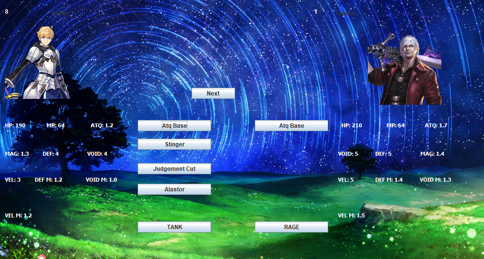

Mis Proyectos
Pazari
Aplicación Web de un e-commerce de productos
locales de Guadalajara, simulando un carrito de compras,
compradores y vendendores cada uno con sus propias operaciones:
Los vendedores tienen una marca, enlace a su red social más usada,
capacidad de añadir y eliminar productos, mientras que los compradores
pueden comprar estos productos, buscar por categorías y nombres de marcas
y consultar los bazares proximos a realizarse en Guadalajara.
Lenguajes:
HTML, CSS, JS y Node JS
API Personajes RPG

Una API que permite crear personajes al estilo RPG;
usando clases y diferentes caracteristicas para los atributos iniciales
y permitir añadir una imagen mediante una ruta local. Además, se
pueden añadir hasta cuatro movimientos que coincidan con la clase
del personaje.
Todos estos datos se guardan en una base de datos SQL conectada
a la aplicación para manejar un sistema de cuentas de usuario
para que solo se pueda acceder a los personajes propios
y cargarlos solo en caso de usarlos para pelear
Como añadido, se implementó una interfaz gráfica sencilla
para que los usuarios puedan iniciar sesión y gestionar sus personajes,
además, existe un modo de combate vs CPU en el que
se batalla usando un personaje propio contra personajes
predefinidos para la computadora.
Lenguajes:
Java, apoyandose en JFrame para UI
MySQL para la base de datos
Shin Megami Tensei Zero
Un pequeño simulador de batallas RPG por turnos
utilizando la consola de C, con un
creador de personajes sencillo en el que se define nombre y HP.
Se apoya del uso de hilos para eventos aleatorios cada 30 segundos
en medio del combate, el uso de un stack para determinar el
mejor jugador en base a la relación Victorias-Derrotas
y el uso de listas dinámicas para la lista de personajes creados.
También incluye un combate sencillo contra la computadora.
Lenguajes:
C